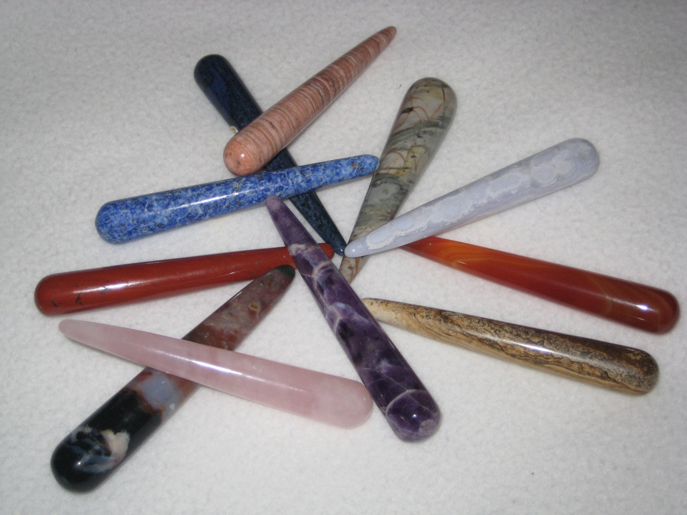

Séminaires
Présentation
Ewald Kliegel est né en 1957. Heilpraktiker, il enseigne et pratique les médecines douces. Egalement auteur de plusieurs ouvrages, il propose des conférences et séminaires. Pour moi, le plus gros apport des zones de réflexologie, c’est qu’elles représentent les phénomènes les plus fascinants de notre peau. Elles sont la « carte géographique » de la santé. Cette expression se retrouve dans toutes mes publications. Je souhaite montrer par là que la surface de notre peau abrite un eldorado de possibilités dont seule une fraction nous est connue.
Ewald Kliegel
Massage des Méridiens avec les pierres
Séminaire de base – 4 mai 2012
Pour des milliers d’années la médecine traditionnelle chinoise (MTC) suite à un concept de canaux d’énergie, les «méridiens».Ces méridiens courent tels que un système d’irrigation à travers notre corps. Comme dans un système d’irrigation, il est la volonté de maintenir le flux partout cohérente et uniforme. Nous recevons également la santé et le bien-être.
À la base de cette comparaison, une région se dessécheraient si le canal ce qu’il soit fournit trop peu d’énergie. Cela signifie du malaise, d’inconfort ou même la douleur. Bien sûr, la même chose s’applique pour trop, quand le flux dans un canal d’énergie est excessive. Ainsi, le but des massages des méridiens est afin de maintenir ou restaurer un flux équilibré d’énergie.
Pour cela, les guérisseurs anciens chinois ont découvert des écluses dans ce système d’irrigation: les points d’acupressure. Due aux qualités de l’énergie, nous pouvons utiliser les bâtons des pierres pour soutenir et équilibrer les méridiens ciblé dans leurs énergies. Avec les bâtons des pierres nous pouvons remplir ou déverser les énergies et nous pouvons influencer les écluses, les points d’acupressure, avec un grand précision.
Dans le séminaire de base les fondements de la MTC seront enseignées pratiquement et théoriquement.
Les bases – les traitements – les techniques – les possibilités
Massage des Méridiens avec les pierres
Séminaire avancé – 5-6 mai 2012
Dans le séminaire pour les utilisateurs avancés, les participants apprennent les traitements de la réflexologie pour des organes et structures du corps en combinaison avec des bâtons des pierres.
Le séminaire est basé sur les trois feuillets embryonnaires du développement humain. De l’endoderme sont originaires les organes de l’appareil digestif et ses glandes (intestin, estomac, foie, pancréas), ainsi la thyroïde, le thymus, les poumons et les organes urinaires. Du mésoderme, le feuillet du milieu, viennent le tissu conjonctif, les os, les muscles, le cœur, les vaisseaux sanguins et les cellules du sang, le système lymphatique, la rate, les reins et les organes reproductifs. L’ectoderme, le feuillet embryonnaire externe, forme la peau, le système nerveux et les organes sensoriels.
Toutes ces fonctions sont associées aux contenus de la conscience. Ces niveaux de l’âme des organes seront aussi bien traités dans le séminaire.
Massage des Méridiens avec les pierres
Séminaire de base – 7 septembre 2012
Réflexologie avec les bâtons de pierres une pratique de la naturopathie
Réflexologie comme un moyen de l’Occident est et manière holistique du traitement
Traitement avec les pierres précieuses dans la pratique
Les bases – les traitements – les techniques – les possibilités
Réflex-Balance Massage avec les pierres
Séminaire avancé I – 8-9 septembre 2012
Après le séminaire de base, où les possibilités dans de la réflexologie aux pieds sont au centre des applications le séminaire avancé s’enseigne dans les autres systèmes de réflexologie et de leurs mise en réseau dans la thérapie et des soins pour le bien-être. Cela inclut, par exemple, la réflexologie de l’oreille, de la tête, des dermatomes et des autres systèmes. Le but de ce séminaire est de traiter la plénitude de la réflexologie avec des techniques manuelles et des mesures énergiques. Cela comprend principalement des bâtons des pierres, des huiles essentielles et des techniques mentales. Le séminaire avancé est particulièrement adapté aux utilisateurs qui travaillent dans la thérapie et du bien-être.
Réflex-Balance Massage avec les pierres
Séminaire avancé II - date non fixé
Dans le séminaire pour les utilisateurs avancés, les participants apprennent les traitements de la réflexologie pour des organes et structures du corps en combinaison avec des bâtons des pierres.
Le séminaire est basé sur les trois feuillets embryonnaires du développement humain. De l’endoderme sont originaires les organes de l’appareil digestif et ses glandes (intestin, estomac, foie, pancréas), ainsi la thyroïde, le thymus, les poumons et les organes urinaires. Du mésoderme, le feuillet du milieu, viennent le tissu conjonctif, les os, les muscles, le cœur, les vaisseaux sanguins et les cellules du sang, le système lymphatique, la rate, les reins et les organes reproductifs. L’ectoderme, le feuillet embryonnaire externe, forme la peau, le système nerveux et les organes sensoriels.
Toutes ces fonctions sont associées aux contenus de la conscience. Ces niveaux de l’âme des organes seront aussi bien traités dans le séminaire.